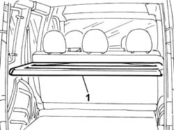
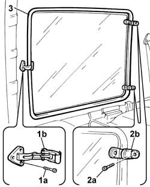
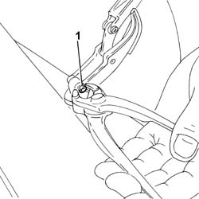
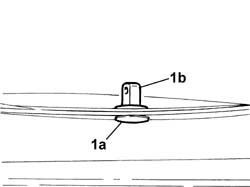

7035D10 l/h or r/h side opening window (one) - r+r includes r+r of open/close device
- Path
- Procedures > 70 FITTINGS > 7035 BODYSHELL WINDOWS > 7035D passenger compartment side opening windows > 7035D10 l/h or r/h side opening window (one) - r+r includes r+r of open/close device
- Kind
- repair procedure (removal / refitting; the operation number is the code)
- Applies to
- all engines; all production periods
- Interactive page
- https://sloeber94.github.io/elrnDB-fDbl/en/#/2585127
Applies to: all engines; all production periods; only with equipment: Doblò trim level
 Removing
Removing
 Refitting
RefittingOpen the rear tailgate.
1. Fold the rear parcel shelf over.

Applies to: all engines; all production periods; only with equipment: Doblò trim level
1. Undo the bolts (1a) and detach the opening/closing device (1b) from the bodyshell.
2. Undo the bolt (2a) and detach the upper and lower hinges (2b) from the bodyshell.
3. Remove the window complete with oening/closing device.

Applies to: all engines; all production periods; only with equipment: Doblò trim level
Adjust the window carefully.
1. Cut the head of the pin fixing the window opening/closing device on the glass support using pliers.

Applies to: all engines; all production periods; only with equipment: Doblò trim level
1. Keep the lower part (1a) of the support still on the glass and undo the upper section (1b).

Applies to: all engines; all production periods; only with equipment: Doblò trim level
Refitting
Removingfit the support for the side window opening/closing device on the window.
Using a new fixing pin, fit the opening/closing device on the window support.
Fit the side window in its housing.
Tighten the bolts on the bodyshell fixing the upper and lower hinges and the window opening/closing device.
Reposition the rear parcel shelf and close the tailgate.